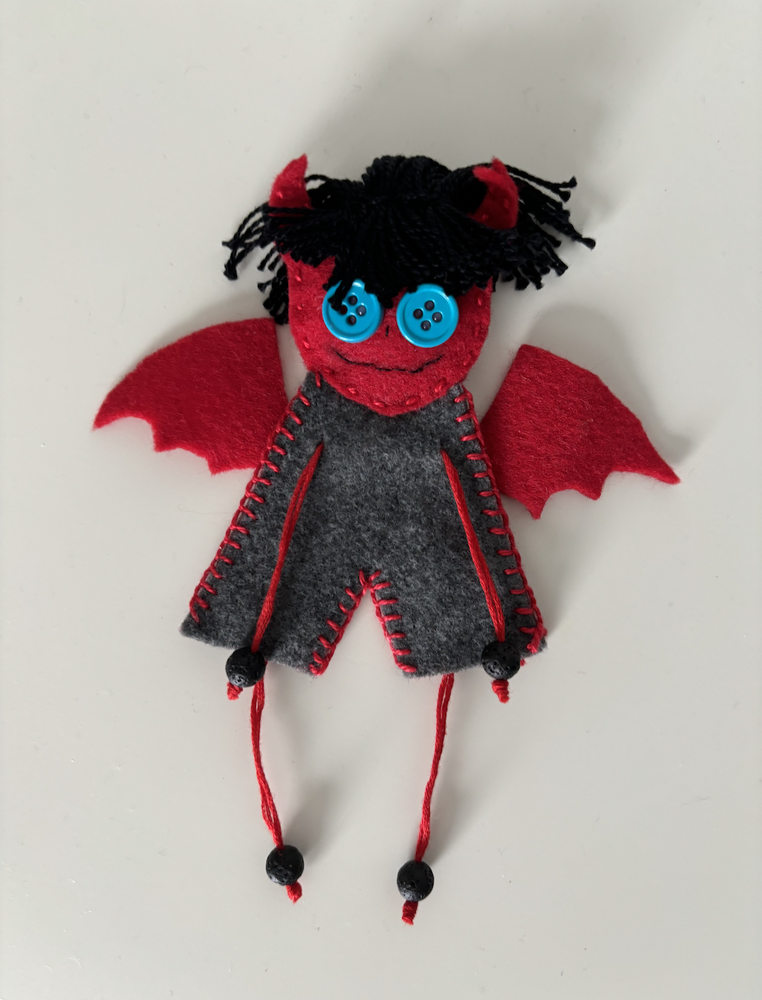
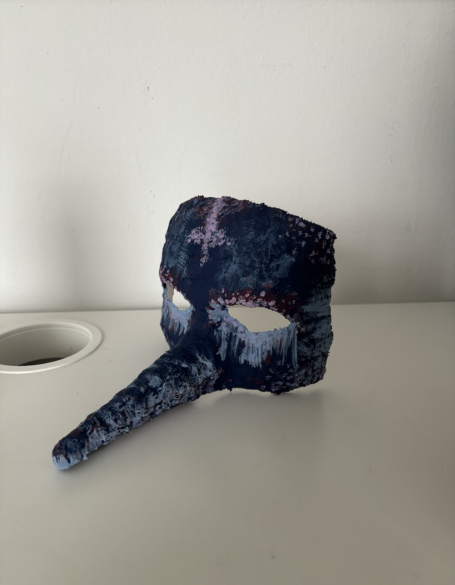

One of My Dolls
This is an example of dolls I make. I use felt, beads, buttons, threads, and hot glue. I follow a paper template I made for the head and body to cut trace the outlines onto felt. Then, I cut them out and sew them together by hand.
One of My Masks
This is an example of masks I make. Although the structures and colors vary, I follow the same steps similar to paper mache. I cut out pieces of gauze, wet it in warm water, and put it over a mannequin’s face until it’s fully covered. Cardboard can be taped to the mannequin head to modify its structure. After the material has dried and hardened, I pull it off the mannequin and apply glue on the inside and outside of the mask.